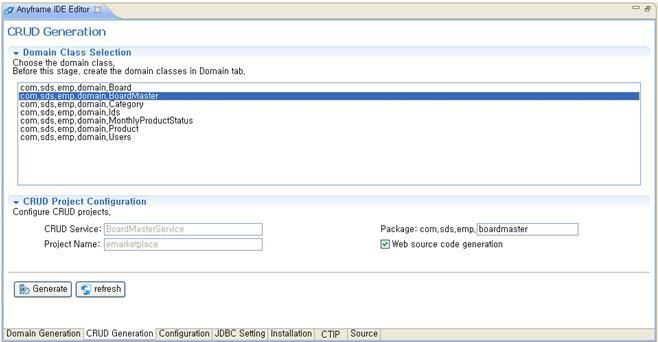

CRUD Generation
Anyframe IDE을 이용해 CRUD를 생성해본다.
Domain 클래스를 중심으로 CRUD에 대한 기본 코드를 생성하고 자동으로 테스트 코드와 테스트 데이터를 생성해줌으로써
생성된 코드의 기능 확인까지 손쉽게 할 수 있다. 따라서, CRUD Generation 기능을 사용하기 전에 Domain Generation 기능을 이용하여,
연결된 DB 테이블 기반의 Domain 클래스를 먼저 생성하도록 한다.
Domain Generation 기능을 수행 할 때, 참조관계에 있는 테이블의 경우 해당 테이블을 동시에 선택하여 Domain 클래스를 생성하지 않으면,
CRUD Generation 기능을 수행 할 때 에러가 발생하므로 주의한다.
- 프로젝트를 선택한 후 우 클릭 >> Anyframe Tools >> Anyframe IDE 메뉴를 선택한다.
- Anyframe IDE Editor에서 CRUD Generation Tab을 선택한다.
Refresh 버튼을 수행하면 현재 선택 가능한 Domain 클래스 목록이 조회된다.
- CRUD 기능을 구현하고 싶은 Domain 클래스를 선택하고, CRUD Project
Configuration 내용을 입력한다.
- CRUD Service: CRUD 기능이 구현될 서비스 명으로 Default로 이름이 지정된다.
- Package: CRUD가 생성될 패키지 이름이며, 특정 서브 시스템 하위로 코드를 생성하고 싶다면 중간 패키지 정보를 함께 입력하면 된다. (ex. sub.categories)
- Project Name: 프로젝트 명
- Web source code generation: 비즈니스 레이어에 해당하는 소스 뿐 아니라 프리젠테이션 레이어 소스 코드들도 함께 생성하고자 한다면 체크 박스에 체크하도록 한다.
Service 타입 프로젝트의 경우, 이 체크박스는 활성화 되지 않는다.

- Generate 버튼을 클릭한 후, CRUD 소스코드 생성 작업이 완료되면, Console 창을 통해 Build Successful 이라는 메세지가 출력된다.
CRUD 소스코드가 제대로 생성되었는지 확인하기 위해 Domain 클래스에 대한 비즈니스 서비스 인터페이스,구현 클래스, DAO 클래스, Spring 설정 파일들,
테스트 코드, 테스트 데이터 등을 확인해본다.
Web 타입 프로젝트에는 Spring MVC Controller 클래스, Spring MVC 설정 파일, 테스트 코드, JSP 페이지 등이 생성된다.
참고로, CRUD 생성 후 소스파일에 표시가 뜨는 경우는, Anyframe Test Plugin이 없기 때문이다.
Anyframe IDE Editor의 Installation 탭에서 Anyframe Test Plugin을 다운받아 설치하면 해결된다.
또한, Build Successful 이라는 메세지가 출력되었음에도, CRUD 소스 코드가 정상적으로 생성되지 않았다면,
[프로젝트 Home]/target/classes 에 CRUD 소스코드 대상인 Domain 클래스에 대한 컴파일이 정상적이지 않거나,
CRUD 소스코드 수행 시 필수적으로 필요한 폴더나 파일이 존재하지 않을 수도 있기 때문에 프로젝트에 대한 빌드를 수행하거나,
Console 창의 로그를 확인하여 필수적으로 필요한 폴더나 파일들을 확인하도록 한다.
소스 코드 생성을 위한 템플릿은 Freemarker template으로 구성되어 있으며 기본 템플릿으로 default template이 사용된다.
또한 Anyframe Core Plugin만 설치 시 DAO Framework은 springjdbc가 디폴트 설정이므로 소스 코드 변경 시 변경하고 싶다면,
사용하고자 하는 DAO Framework을 위한 Anyframe Plugin(query, hibernate, iBATIS2)들을 install하여 사용하도록 한다.
아래 코드는 default template에 DAO Framework으로 springjdbc를 사용한 경우 자동 생성된 코드의 예이다.
- 서비스인터페이스 (src/main/java/[대표패키지]/[-package 값]/service/[Entity 클래스명]Service.java)
public interface BoardService{
void create(Board board) throws Exception;
void remove(BoardId id) throws Exception;
중략...
} |
- 서비스구현클래스 (src/main/java/[대표패키지]/[-package 값]/service/impl/[Entity 클래스명]ServiceImpl.java)
@Service("boardService")
@Transactional(rollbackFor = {Exception.class}, propagation = Propagation.REQUIRED)
public class BoardServiceImpl implements BoardService {
@Inject
@Named("boardDao")
private BoardDao boardDao;
public void create(Board board) throws Exception {
this.boardDao.create(board);
}
public void remove(BoardId id) throws Exception {
this.boardDao.remove(id);
}
중략...
} |
- DAO클래스 (src/main/java/[대표패키지]/[-package 값]/service/impl/[Entity 클래스명]Dao.java)
@Repository("boardDao")
public class BoardDao extends SimpleJdbcDaoSupport {
@Value("#{contextProperties['pageSize'] ?: 10}")
int pageSize;
@Value("#{contextProperties['pageUnit'] ?: 10}")
int pageUnit;
@Inject
public void setJdbcDaoDataSource(DataSource dataSource) throws Exception {
super.setDataSource(dataSource);
}
public void create(Board board) throws Exception {
String sql = "INSERT INTO BOARD (BOARD_ID, BOARD_DESC, BOARD_MASTER_ID, BOARD_NAME,
BOARD_ORDER, BOARD_TOPICS, REG_DATE) " + "VALUES (?, ?, ?, ?, ?, ?, ?)";
this.getSimpleJdbcTemplate().update(sql, new Object[] {board.getId().getBoardId(), board.getBoardDesc(),
board.getId().getBoardMasterId(), board.getBoardName(),
board.getBoardOrder(), board.getBoardTopics(), board.getRegDate()});
}
중략...
} |
- MessageSoruce (src/main/resources/message/message-generation.properties)
# -- Board-START
board.id.boardId=Board Id
board.id.boardMasterId=Board Master Id
board.boardDesc=Board Desc
board.boardName=Board Name
board.boardOrder=Board Order
board.boardTopics=Board Topics
board.regDate=Reg Date
# -- success messages --
success.board.create=Board has been added successfully.
success.board.update=Board has been updated successfully.
success.board.delete=Board has been deleted successfully.
# -- error messages --
error.boardserviceimpl.create=Board data not created
error.boardserviceimpl.create.solution=Enter correct data for mandatory field
or enter data according to formats means date format as yyyy-mm-dd
error.boardserviceimpl.create.reason=Entered incorrect data for Board
중략... |
- 통합 test case (src/test/java/[대표패키지]/[-package 값]/service/[Entity 클래스명]ServiceTest.java)
@RunWith(SpringJUnit4ClassRunner.class)
@ContextConfiguration(locations = { "file:./src/main/resources/spring/context-*.xml" })
public class BoardServiceTest{
@Inject
@Named("boardDao")
private BoardDao boardDao;
@Test
@Rollback(value=true)
public void manageBoard() throws Exception {
// 1. create a new board
Board board = getBoard();
중략...
}
중략...
} |
- 컨트롤러 (src/main/java/[대표패키지]/[-package 값]/web/[Entity 클래스명]Controller.java)
@Controller
@RequestMapping("/board.do")
public class BoardController {
/**
* Resource Injection on BoardService
*/
@Inject
@Named("boardService")
private BoardService boardService;
중략...
/**
* Display form for adding Board.
* @param model model containing control data
* @return the prepared form view
* @throws Exception in case of an invalid new form object
*/
@RequestMapping(params = "method=createView")
public String createView(Model model) throws Exception {
model.addAttribute(new Board());
return "generation/board/form" ;
}
} |
- UI JSP 파일 (src/main/webapp/WEB-INF/jsp/generation/[Entity명]/*.jsp)
<%@ page language="java" errorPage="/sample/common/error.jsp"
pageEncoding="UTF-8" contentType="text/html;charset=utf-8" %>
<%@ include file="/sample/common/taglibs.jsp"%>
<html>
<head>
<%@ include file="/sample/common/meta.jsp" %>
<title><fmt:message key="boardList.title"/></title>
<meta name="heading" content="<fmt:message key='boardList.heading'/>"/>
<link rel="stylesheet" href="<c:url value='/sample/css/admin.css'/>"
type="text/css">
<script type="text/javascript"
src="<c:url value='/sample/javascript/CommonScript.js'/>"></script>
<script language="JavaScript">
function fncCreateBoardView() {
document.location.href="<c:url value='/board.do?method=createView'/>";
}
중략... |
- 단위 test case (src/test/java/[대표패키지]/[-package 값]/web/[Entity 클래스명]ControllerTest.java)
@RunWith(JMock.class)
public class BoardControllerTest {
private BoardController controller;
private String SUCCESS_CREATEVIEW = "generation/board/form";
private String SUCCESS_CREATE = "redirect:/board.do?method=list";
private String SUCCESS_GET = "generation/board/form";
private String SUCCESS_UPDATE = "redirect:/board.do?method=list";
private String SUCCESS_LIST = "generation/board/list";
private String SUCCESS_REMOVE = "redirect:/board.do?method=list";
private Mockery context = new JUnit4Mockery();
private BoardService mockService = null;
@Before
public void setUp() throws Exception {
System.setProperty("log4j.configuration", "log4j-test.xml");
this.mockService = context.mock(BoardService.class);
this.controller = new BoardController();
this.controller.setBoardService(this.mockService);
}
public void setBoardController(BoardController controller) {
this.controller = controller;
}
@Test
public void testCreateView() throws Exception{
String viewName = this.controller.createView(new ExtendedModelMap());
assertEquals("returned correct view name", SUCCESS_CREATEVIEW, viewName);
}
중략... |
[참고 사항]
위에서 설명한 기능 수행 도중에는 프로젝트 생성, 코드 생성 및 DB 변경 등과 같은 Anyframe IDE의 기능을 동시에 수행시킬 수 없으므로 유의하도록 한다.
(Background 실행을 통한 기능 수행 시) |
[참고 사항]
| CRUD 소스코드 생성 후 런타임 시 발생하는 에러 해결 Tip |
- map 템플릿을 활용하여 oracle DB와 query dao framework을 사용할때 timestamp 타입 데이터가 있는 경우
- 현상) 입력/수정 화면에서 create/update 할 때 ORA-01843 : not a valid month 에러 발생
- 원인) 쿼리문에서 timestamp 타입 format을 지정해야 함
- 해결책)create/update 쿼리의 timestamp 타입 컬럼에 아래와 같이 포맷적용
| to_timestamp(timestamp 타입 컬럼,'yyyy-mm-dd hh24:mi:ssxff') |
- map 템플릿을 활용하여 hsqldb DB를 사용할때 bit 타입 데이터가 있는 경우
- 현상) 입력/수정 화면에서 create/update 할 때 java.sql.SQLException 에러 발생
- 원인) bit타입 컬럼의 값은 DB에 1 또는0으로 저장되어야 하는데, 화면에서는 true/false(또는 null) 값을 사용하기 때문에 invalid character value for cast exception 발생
- 해결책) bit타입 컬럼에 대해 controller 나 service 에서 true/false(또는 null)로 넘겨오는 값을 1 또는 0으로 변환하는 로직 추가해야 함
//j 컬럼이 bit 타입인 경우
if (hashMapModel.getMap().get("j") != null && hashMapModel.getMap().get("j").equals("true"))
hashMapModel.getMap().put("j", "1");
else
hashMapModel.getMap().put("j", "0"); |
- time 타입 데이터가 있는 경우
- 현상) 입력/수정 화면에서 create/update 할 때 Fali to convert 오류 발생
- 원인)Time 타입 데이터(시:분:초)가 request parameter에 String으로 담겨지기 때문에, Domain 클래스와 Binding 될때 데이터 바인딩이 되지 않음
- 해결책)Domain 클래스에서 time 타입 컬럼을 string 타입으로 선언하여 사용
|
|